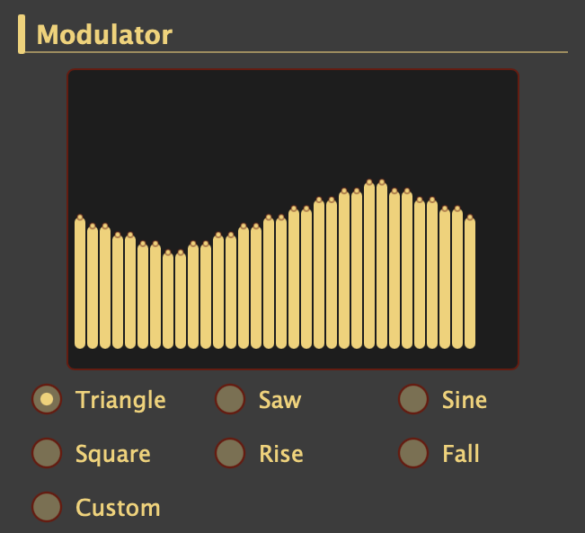
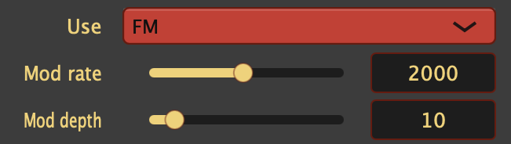
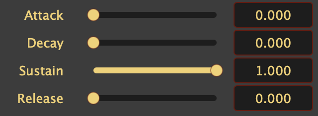

by Yokemura(YMCK) http://ymck.net/
What is Magical FDS Plug?
Magical FDS Plug is a software synthesizer that reproduces the sound of the so-called "Disk System sound source" (FDS sound source). It runs as a plug-in in host applications that support Audio Units (Mac) or VST3 (Mac / Windows).
The FDS sound source has a unique mechanism: a 64-sample wavetable (the carrier) is modulated by a separate 32-step command sequence (the modulator). Because it offers extremely high freedom, it is difficult to configure; this plug-in keeps that freedom while providing a logical interface to build waveforms — additive synthesis, preset morphing, and more.
Features
- Carrier + modulator architecture — Design the audible wavetable and the modulator sequence independently
- Four carrier editing modes — Additive, Preset Morph, Pulse Shape, and Free Draw
- Six modulator presets + Custom — Triangle, saw, sine, square, rise, fall, or a 32-digit custom opcode string
- Mod rate modes: LFO / FM / OFF — From slow vibrato-like sweeps to timbral FM
- Separate ADSR envelopes for carrier and modulator (same feel as Magical 8bit Plug 2)
- ~2 kHz output low-pass filter (on by default) for hardware-like tone
Carrier and modulator
| Carrier | The basic waveform you actually hear | A 64-sample, 6-bit wavetable. Built with additive drawbars, preset morph, pulse shape, or free draw |
| Modulator | The waveform that modulates the carrier | A 32-step opcode sequence. Choose from six presets and adjust rate/depth for LFO-like or FM-like effects |
Open source
Magical FDS Plug is an open source software, so you can modify or enhance the functionality as you want and contribute it to share your improvement. The GitHub repository is here.
If you want to support the development but are not familiar with coding you can contribute through a donation.
Installation
Basically put the plug-in file in the folder specified by your OS or host application to start using. Typical installation paths are listed below. The actual location varies by environment; please refer to your OS or DAW documentation.
Host applications including DAWs have become increasingly diverse, and it is practically impossible for me to know how each one handles plug-ins. If you have questions, please search for answers or ask your software's user community rather than contacting me. I will not respond to inquiries about basic installation methods.
| Platform | Plug-in format | Extension | Typical installation path |
| Mac | AudioUnits | .component | /Library/Audio/Plug-ins/Components |
| VST3 | .vst3 | /Library/Audio/Plug-ins/VST3 | |
| Windows | VST3 | .vst3 | C:\Program Files\Common Files\VST3 |
Usage
Magical FDS Plug has three sections in its UI: Global, Carrier, and Modulator. Global is on top; Carrier and Modulator sit side by side below (width ratio 3:2). Visible controls depend on Carrier Wave Mode and Mod Rate Use (LFO/FM/OFF). If you don't see the control you want, check those selections first.

- (1) Global Section
- General settings: master gain, polyphony, bend range, theme, low-pass filter, preset load/save.
- (2) Carrier Section
- Carrier ADSR and wavetable editing. Control contents vary according to Carrier Wave Mode.
- (3) Modulator Section
- Modulator waveform, rate/depth, and ADSR. Rate and Depth visibility depends on the Use setting.
Global Section
The Global section at the top contains plug-in-wide settings (see (1) in the screenshot above).
- Gain
- Master output level (0–1). Default 0.5. Useful for balancing against other instruments.
- Polyphony
- Number of voices (1–32). Default 1.
- Bend
- Pitch bend range in semitones (0–24). Default 2. This is the deviation when the bend wheel is at maximum.
- Load / Save
- Save or restore all parameters as an XML preset file.
- Theme
- UI color: FDS, YMCK, YMCK Dark, Japan, Worldwide, Monotone, Mono Dark.
- LPF
- Toggle the ~2 kHz low-pass filter. Default ON. Cutoff and Q are not adjustable.
Carrier Section
The carrier is a 64-sample, 6-bit (64-level) wavetable — what you actually hear (see (2) above).
Envelope
Volume envelope with four parameters.
- Carrier Attack
- Time until volume reaches maximum after key on (seconds, 0–5).
- Carrier Decay
- Time until volume reaches the sustain level (seconds, 0–5).
- Carrier Sustain
- Level held until key off (0–1).
- Carrier Release
- Time until volume reaches zero after key off (seconds, 0–5).
Carrier Wave Mode
Select how the wavetable is built. The control panel below switches accordingly.
| Additive | Mix harmonics with 8 drawbars |
| Preset Morph | Morph triangle, saw, or sine |
| Pulse Shape | Adjust rectangular pulse width |
| Free Draw | Draw 64 samples directly |
Wave display
64 vertical bars show the table. Read-only except in Free Draw, where each bar is editable (0–63).
Additive

Eight Hammond-style drawbars:
8', 4', 2 2/3', 2', 1 3/5', 1 1/3', 1 1/7', 1'
Sliders (0–1) mix sine partials; the result is quantized to 64 samples. Levels are normalized if they would exceed full scale.
Preset Morph

- Preset
- Triangle, Sawtooth, or Sine.
- Morph
- Center = no change. Move right to compress (emphasize smaller amplitudes); left to expand (attenuate them further).
Pulse Shape

- Pulse width
- High segment length from 1 to 63 steps (of 64). Default 32. Levels are 63 (high) and 0 (low).
Free Draw

No control panel — edit the 64 bars in the wave display directly.
Modulator Section
The modulator runs as a 32-step sequence of 3-bit opcodes (see below), as on real FDS hardware. It modulates how the carrier wavetable is scanned, changing timbre (see (3) above).
Wave preview and wave type

32-step cumulative shape (read-only). Choose Triangle, Saw, Sine, Square, Rise, Fall, or Custom. When Custom is selected, an opcode text field is shown.
Use / Rate / Depth

Switch modulation behavior with Use:
| LFO | Slow modulation (vibrato-like). Rate 1–30, Depth 1–5 |
| FM | Timbral FM. Rate 30–4095, Depth 0–63 |
| OFF | No modulation. Rate and Depth are hidden |
- Rate
- Modulation speed. Not a simple Hz readout; higher values = faster / more FM-like. Default 256 in FM mode.
- Depth
- Modulation amount, scaled by the modulator envelope, mapped to FDS mod gain (0–63).
Modulator envelope

Envelope on modulation depth. Same units as the carrier ADSR.
- Mod Attack
- Time until modulation reaches maximum after key on.
- Mod Decay
- Time until modulation reaches the sustain level.
- Mod Sustain
- Level held until key off.
- Mod Release
- Time until modulation reaches zero after key off.
Custom opcodes

Unlike the carrier wavetable, the modulator shape is specified by placing value-manipulation commands (opcodes) at each step. Commands basically only raise or lower the value, so you cannot create waveforms that jump up and down abruptly. (The sole exception is the reset command, which instantly resets the value to 0.)
Opcodes are digits 0–7. When Custom is selected, enter 32 of them in one line. Spaces are ignored. Full-width digits are not allowed. Once valid input is committed, the timbre is updated.
Meaning of each digit (opcode) (FDS hardware)
| Digit | Action |
| 0 | Hold |
| 1 | Counter +1 |
| 2 | Counter +2 |
| 3 | Counter +4 |
| 4 | Reset counter to 0 |
| 5 | Counter −4 |
| 6 | Counter −2 |
| 7 | Counter −1 |
The counter wraps between −64 and 63. The 32 steps loop each cycle.
Example
Opcode sequence equivalent to the triangle preset:
0505050303030303030303030305050505
About the demo song
The attached demo song (demo.mp3) was created with Magical 8bit Plug 2 and this plug-in, Magical FDS Plug. The FDS sounds can be reproduced with the attached preset files.
| lead1.xml | Lead sound at the opening |
| tublarBell1.xml | Bell-like tone that follows; on its own it can sound like a chord |
| tublarBell2.xml | Another bell-like tone used for an obbligato-like phrase afterward |
| celesta.xml | Music-box-like tone when the mood shifts in the middle section |
| flute.xml | Ocarina-like tone |
License
This plug-in is released under the GPL v3 License. The source code is open on GitHub; you can duplicate, distribute, or modify it under the conditions of GPL.
Donation
You can support developing Magical FDS Plug not only by contributing source code but by a donation as well. We really appreciate your support.
You can make a donation from this page.